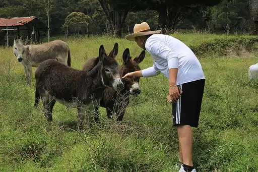
harmonyCC BY-SA 4.0 · Clickentierra · source
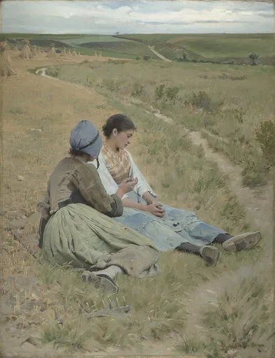
heartbreakPublic domain · Charles Sprague Pearce · source
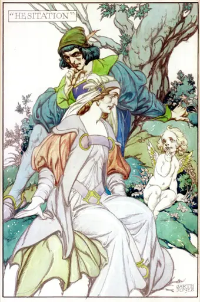
hesitationCC0 · Alfred Garth Jones · source
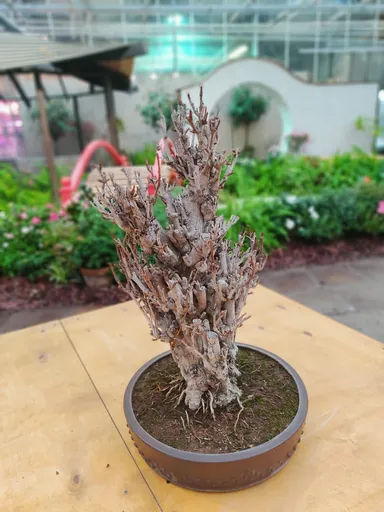
hibernationCC BY 4.0 · Флорист · source
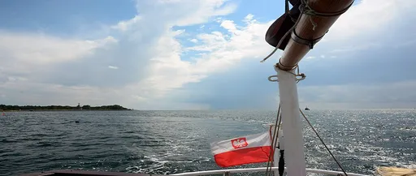
homesicknessCC0 · Waldemar Jan · source
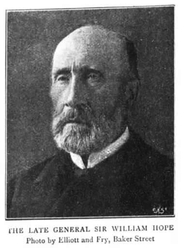
hopePublic domain · The Graphic, An Illustrated Weekly Newspaper, London, England, September 10, 1898 · source
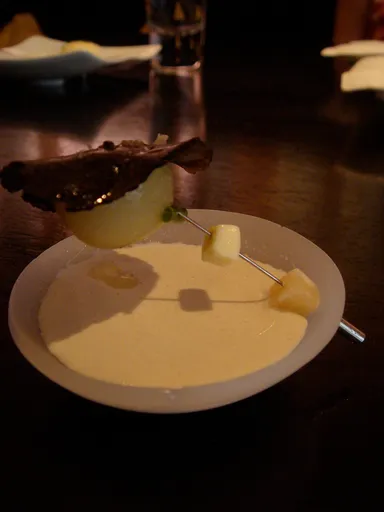
hot-potatoCC BY-SA 2.0 · Will from New York, USA · source
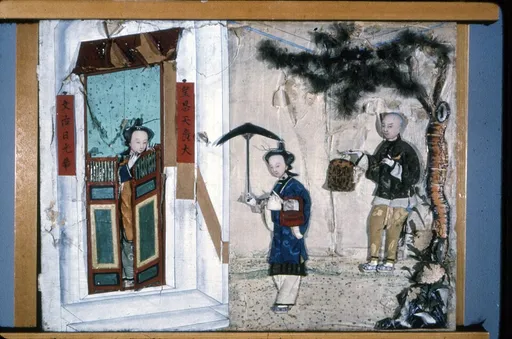
humidityCC BY-SA 4.0 · Heritage Preservation Department - MNHS · source
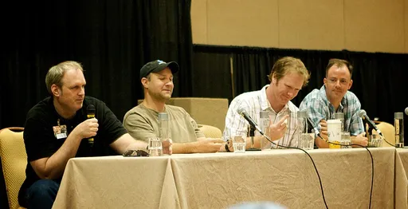
hungerCC BY-SA 2.0 · Tim Dorr · source
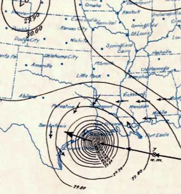
hurricanePublic domain · unknown · source
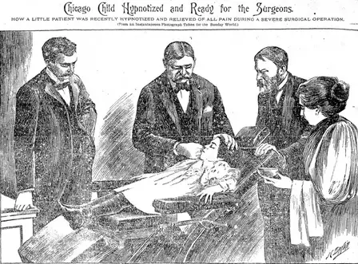
hypnosisPublic domain · Herbert A Parkyn in the newspaper 1896 · source
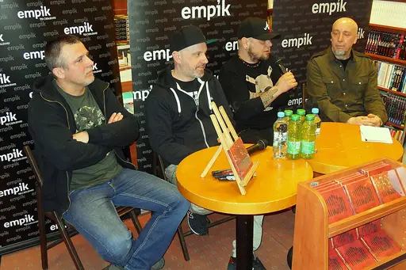
illusionCC BY-SA 3.0 · Artur Andrzej · source
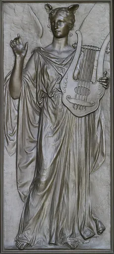
imaginationPublic domain · Artist is Olin Levi Warner (1844–1896). Photographed in 2007 by Carol Highsmith (1946–), who explicitly placed the photograph in the public domain. · source
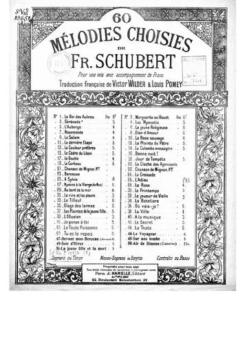
impatiencePublic domain · Schubert, Franz (1797-1828). Compositeur · source
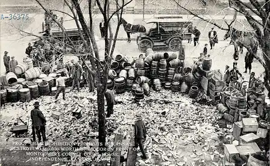
independencePublic domain · Unknown authorUnknown author · source
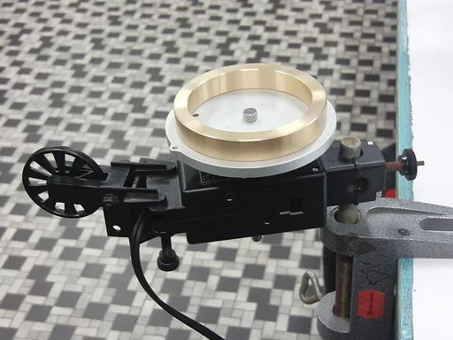
inertiaCC BY-SA 3.0 · GOKLuLe 盧樂 · source

inflationCC0 · JJLiu112 · source
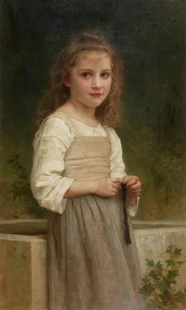
innocenceCC BY-SA 4.0 · William-Adolphe Bouguereau · source
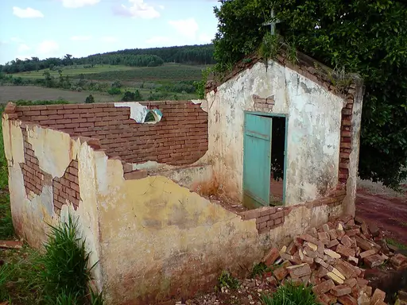
insomniaCC BY 2.0 · Wesley Santos from Brasil · source
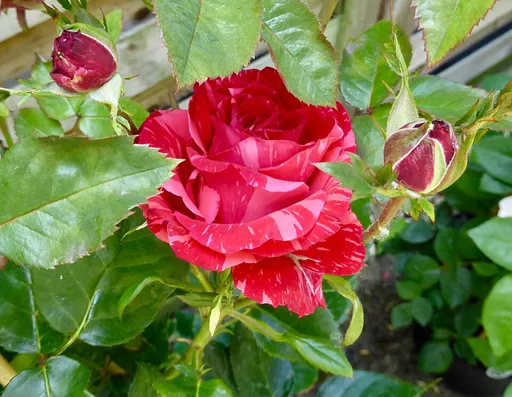
intuitionCC BY-SA 4.0 · Geolina163 · source